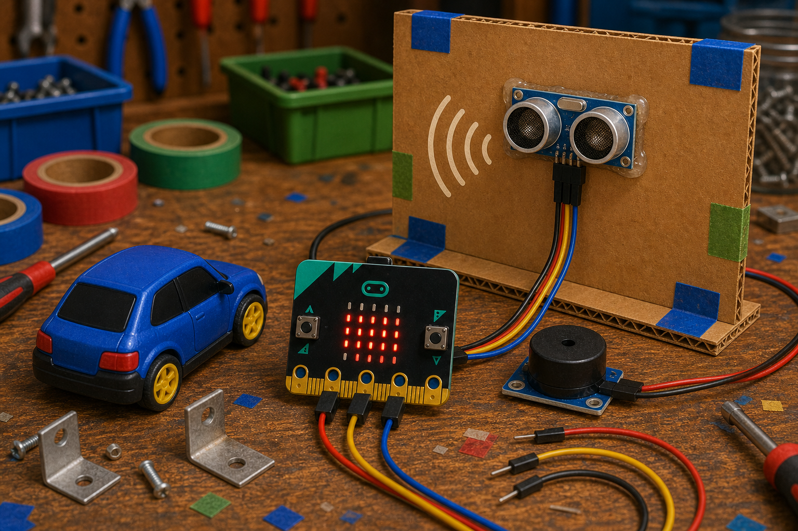
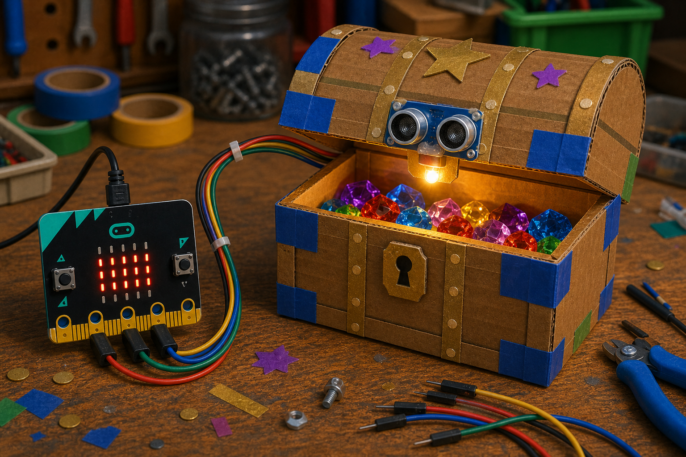

Car reversing sensor
DetectDistance to the wall
→
DecideWall is closer than 0.5 m
→
DoTurn on a beeper
A distance sensor measures how far away something is without touching it.
It works a bit like a bat, sending out sound and listening for the echo to bounce back.
With a micro:bit, the MakeCode sonar extension reads the distance from a trigger and an echo pin.


from microbit import *
from machine import time_pulse_us
pin0.write_digital(0)
pin0.write_digital(1)
pin0.write_digital(0)
duration = time_pulse_us(pin1, 1)
distance = duration / 58basic.forever(function () {
let distance = sonar.ping(
DigitalPin.P0,
DigitalPin.P1,
PingUnit.Centimeters
)
basic.showNumber(distance)
})distance in your Decide code to make the project react.